Hı,I’m Alex.
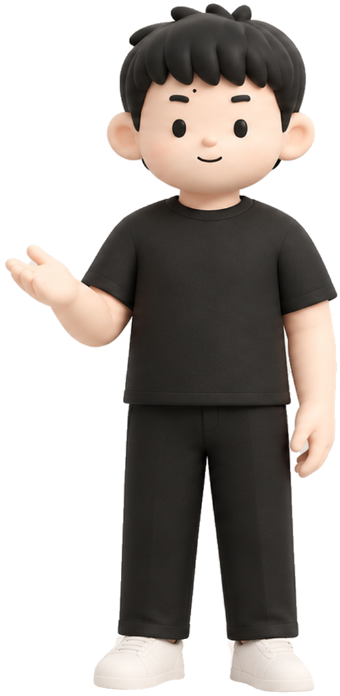
认人只认这一点。
“Turn any product into winning ads.”
Creator-curated presets. AI video ads in a few clicks.
引自 soldy.ai 首页。从创作者整理好的 preset 出发，一件产品几步就能做成一条广告。preset 背后，是有人把一条好广告拆清楚、做成能复现的流程。
What I can bring能带去的
下面三件作品，都由 AI 加脚本完成。
每一件摊开的都是做法：
素材怎么来，镜头怎么排，判断怎么下。
每一章的最后一页，都有一个能点开的入口：成片、网站、演示站。
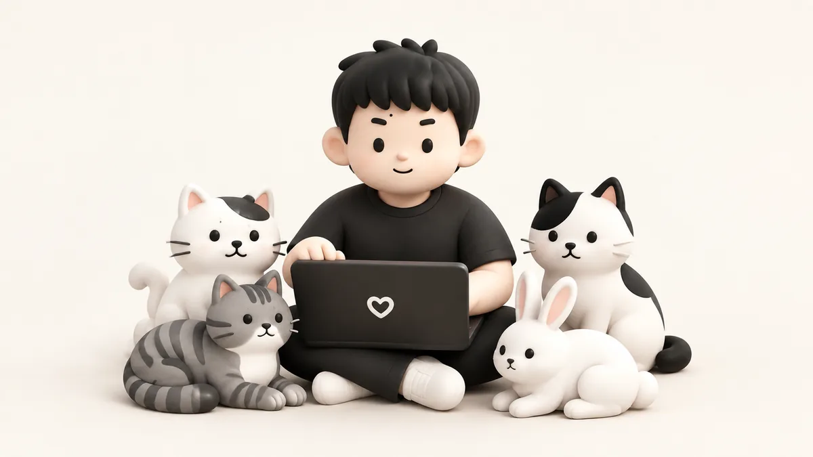
-
i
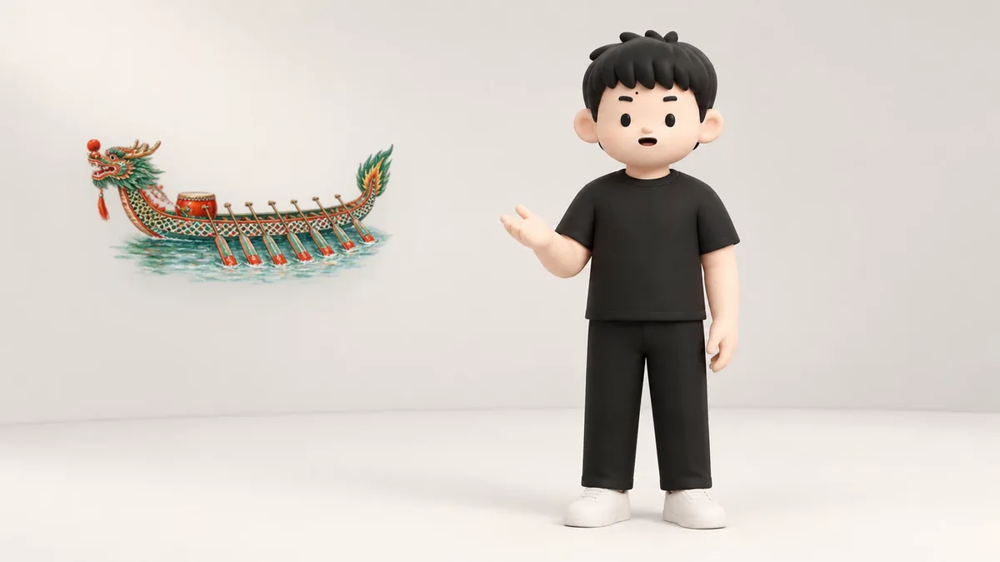
AIGC VIDEOp.03–05求职介绍片4′43″
展示制作视频的思路：一条片子怎样从一张线稿做到成片。 人物素材分镜脚本字幕声音模型测评流水线 -
ii
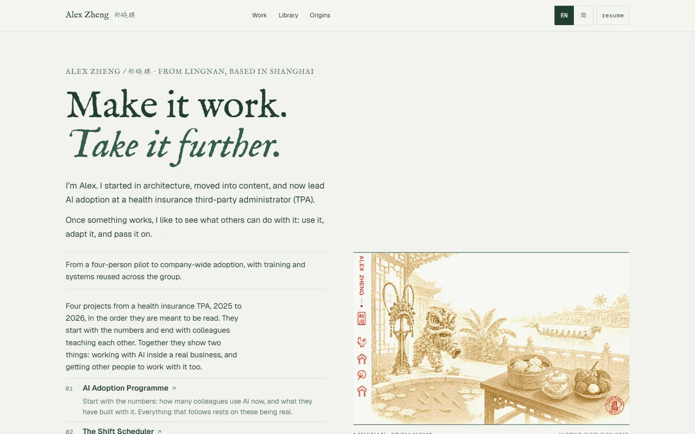
AIGC PORTFOLIOp.06–07作品集网站
展示制作作品集的思路：先定主题，再理故事线，最后做减法。 主题情绪板Storyline比稿取舍 -
iii
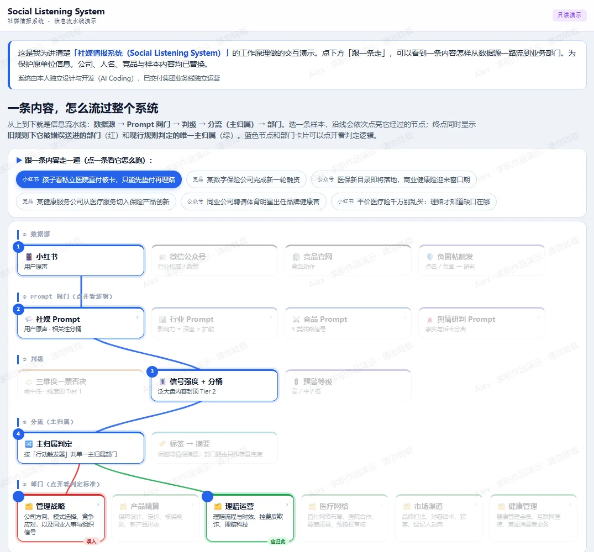
VIBE CODINGp.08–09社媒情报系统Social Listening
一条从数据源到对口部门的信息流水线，独立设计开发，已交给业务线自己运营。 问题信源流水线判级分流边界放到 Soldy
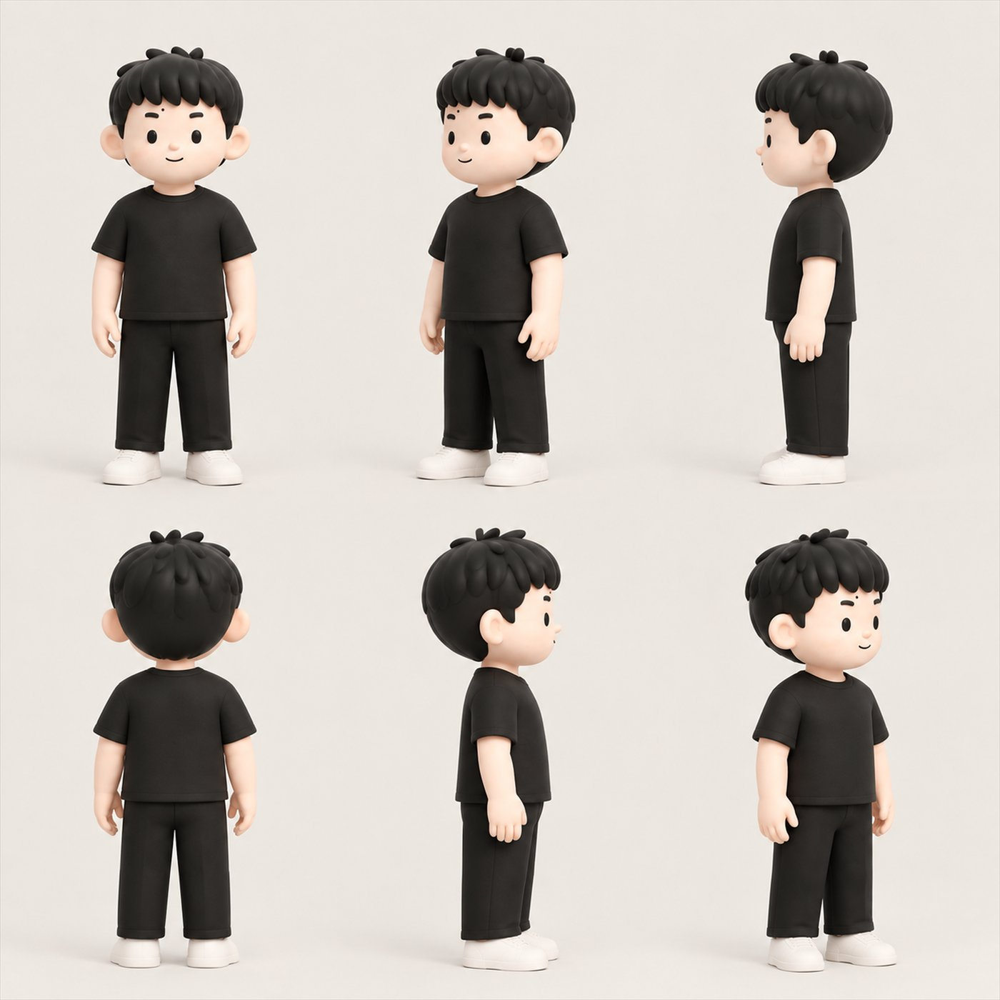
身份锚点：眉上一颗小黑点，永远在画面左侧。补件一律不许镜像。
口型MOUTH · 4 STATES
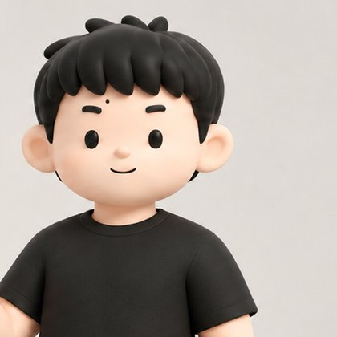
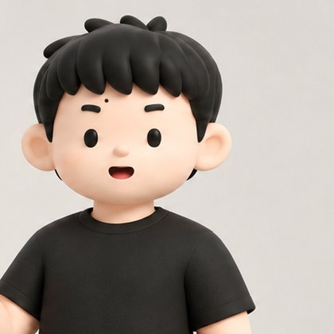
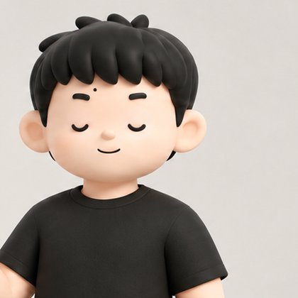
口型随配音逐字切换。闭嘴一张与基准图逐像素一致，切换时脸不跳。
走入WALK-IN · 8 FRAMES
八帧直接硬切只有 7.5 fps，看着是卡的；改为差分抠出步态，再沿缓动路径逐帧移动。
- 嘴型三态
- 眨眼
- 走入八帧
- 透明底
- 遮罩以外零像素改动
口播稿 7′12″ → 3′08″
S0-3学建筑出身，毕业后做过两年多建筑设计。这段经历训练了在规范、需求和交付条件之间解决问题。
S1-4随着规模扩大，又建立了用量与资源的治理机制。
每个项目只回答四个问题：叫什么，为什么挑，用来做什么，做出什么效果。三十五段，砍到十九段。
Make it work. Take it further.
先把事做成，再让它走得更远。成片英文稿的最后一句。
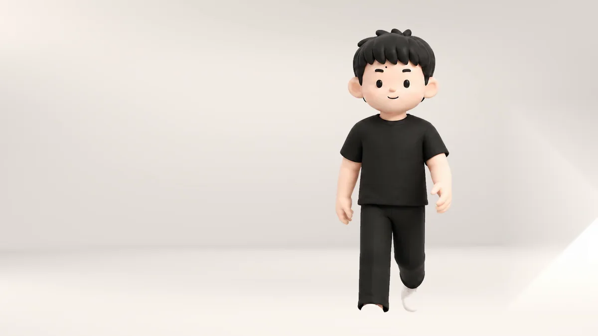
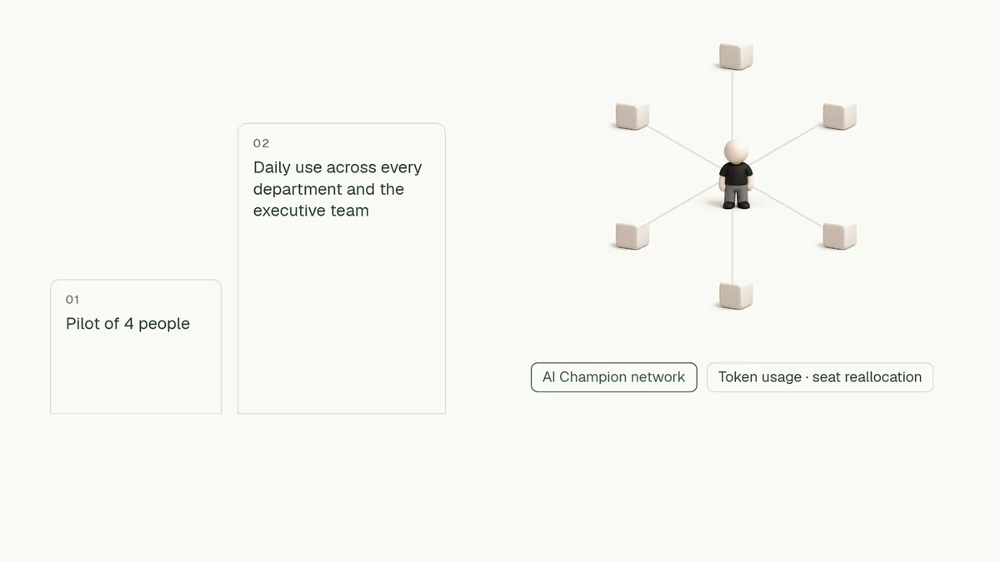
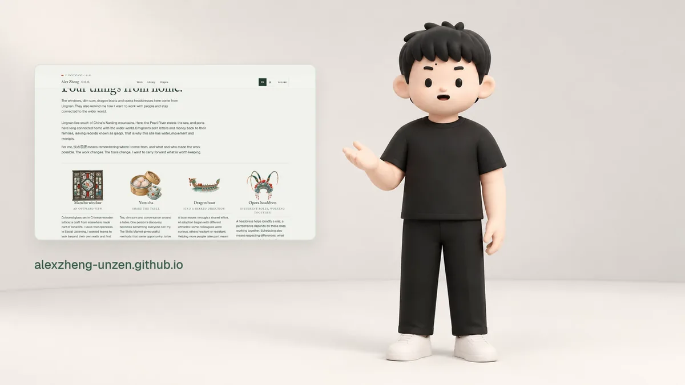
形象太大，把信息挤到角落。改：形象只留在头尾，中间镜头让给内容。
试映 02太长了。改：另剪一条 50 秒社媒版。
字幕SUBTITLES
时间戳取自配音的逐字边界，中文每行不超过 14 字；碰到字幕带，卡片先上移。
声音VOICE
反馈说默认男声「像老头在说话」。换成更快的女声，段间停顿压到 0.25 秒。
模型测评SAME PROMPT, TWO MODELS
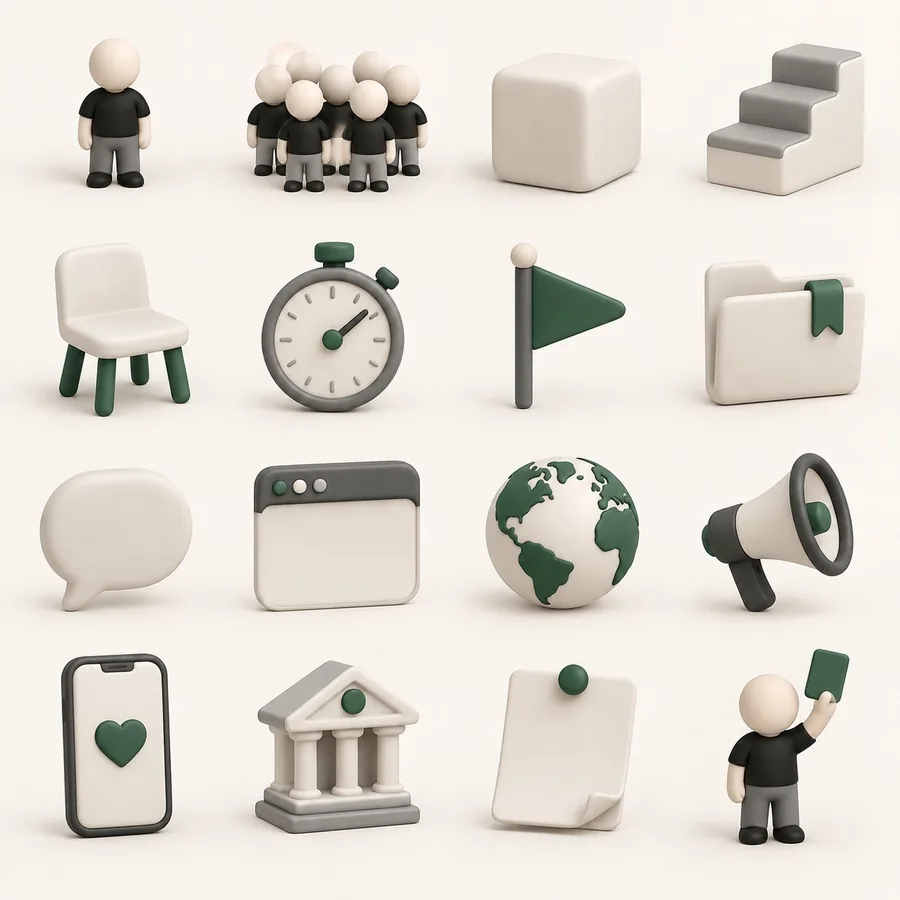
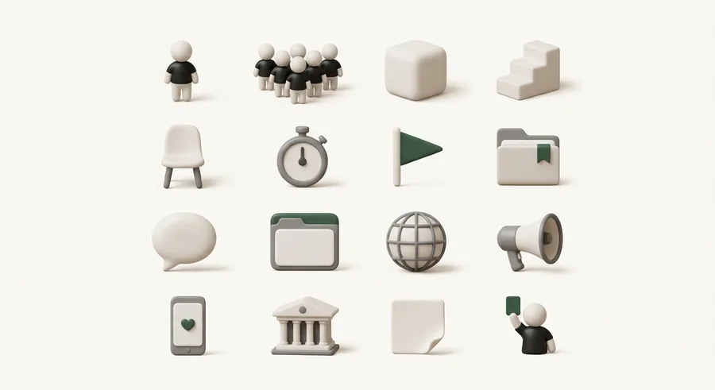
选 GPT Image 2：绿色用多了可以压，材质对不上就没法补。
流水线RE-RUNNABLE
英文版 4′43″ · 另有中文版与 50 秒社媒版
形象、配音、字幕、动画，由 AI 加脚本完成；没有拍摄，也没有外包。
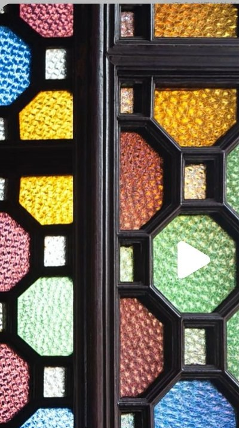
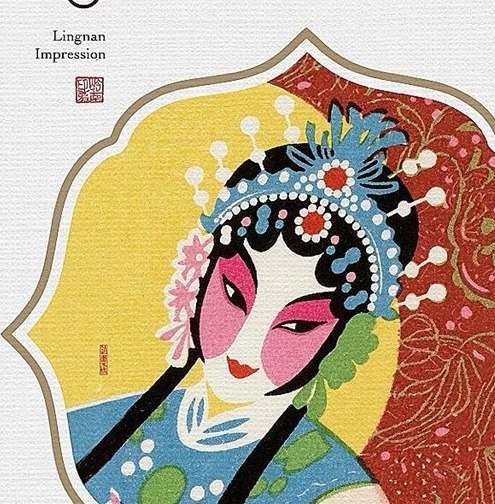
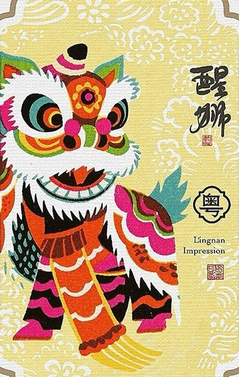
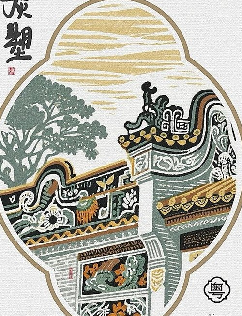
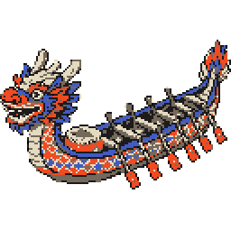
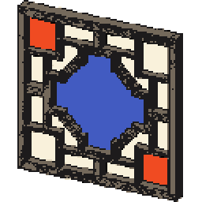
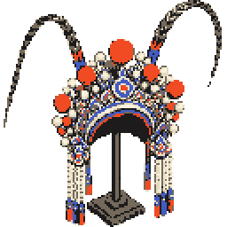
早出海，常寄信。
广东人出洋，已有几百年。
第一版网站读起来像简历换了个排版。于是把自己当成客户，同一份需求发给 7 家 AI agent 比稿，再挑选、合并、删减。
- 比稿7 份方案，评审表逐条记下取舍理由；合稿时只留各家最强的一两处。
- 基线前后出过七个方向。真正有用的一步，是冻结两版做基线：一版管版式与文案，一版管材质与色板。
- 取舍招聘方要的是能快速翻看。靠悬停才看得到的数字整体下线，两句口号只留一句。
首屏只答三件事：是谁，这里有什么，从哪里开始看。
上线前跑过三档宽度的自动验收：零溢出、零报错、零坏图。
把散落的外部信息，变成各部门能直接用的判断。
要解决的三件事WHY
- 信息又多又漏公众号一天几百条，相关的只有两三条，该看到的那条偏偏没人刷到。
- 东西留不下来有价值的信息躺在各人的收藏夹和群聊里，人一走就带走了。
- 看起来太费劲大家真正想知道的是：这条和我有什么关系，要不要做点什么。
五路信源SOURCES
竞品官网微信公众号小红书X监管与官方网站
一条内容怎么走PIPELINE
- 0公司画像先写清业务是什么、什么不归自己管；每份 Prompt 都带着它。
- 1抓取按监控词分头去采，正文和发帖时间当场入库。
- 2读与打标签每类信源走自己的 Prompt，逐条读完再打标签。
- 3判级三个维度一票否决；无关内容直接滤掉，约占一半。
- 4分流每条只判一个主归属部门。
- 5看板送到各部门看板；高危的置顶，等人确认。
旧规则下，一条内容常常同时点亮三四个部门。抽查发现，某个部门收到的 247 条里，约 200 条是误入。现在每条只判一个主归属，判据用各部门的问卷做了真人校准。
设计上的取舍BY DESIGN
- 它不是实时的定时成批采集，一条帖子从发出到上看板，通常是几小时到一两天。
- 高危绝不自动外发研判卡只停在预警区等人看。AI 会判错，品牌声誉的事要有人签字。
- 判定标准要人一直校准这套系统的上限不在技术，在判定标准写得准不准。
放到 SoldyFOR SOLDY
同一套机制换一批数据源，可以做三件事。
- 给 Viral Presets 供应选题每周把 TikTok、Instagram 与 Meta Ads Library 里正在起量的形式整理成候选，按「能否换产品复现」「前 3 秒能否形成 hook」打分，交给模板团队挑选。
- 竞品上新提醒盯住 Higgsfield、Pippit、Creatify、Arcads 的新功能与新模型接入；有动作就当天给出一句判断：要不要跟，影响哪个 Studio。
- 把用户原声变成需求出海卖家在评论区里问「用什么工具」「求提示词」，这些都是需求。按品类和问题归类，可以直接转成教程选题，或交给产品团队。
以上是设想，还没有在 Soldy 的数据上跑过。入职后可以先用一周，在一个品类上跑通一版。
好的想法，
要能被持续打磨成结果。
Creativity deserves respect, and so does the process behind it.
两句都化用自 Soldy 的招聘启事，也是这一册想证明的事：会用模型只是起点，能讲清为什么这样选、能重跑、能验收，才是能交给团队的工作方式。
© 2026 Alex Zheng · 郑晓琪 · 保留所有权利。页面内的公司名、同事姓名和样本内容均已替换或隐去。
Ready for the next take.
10